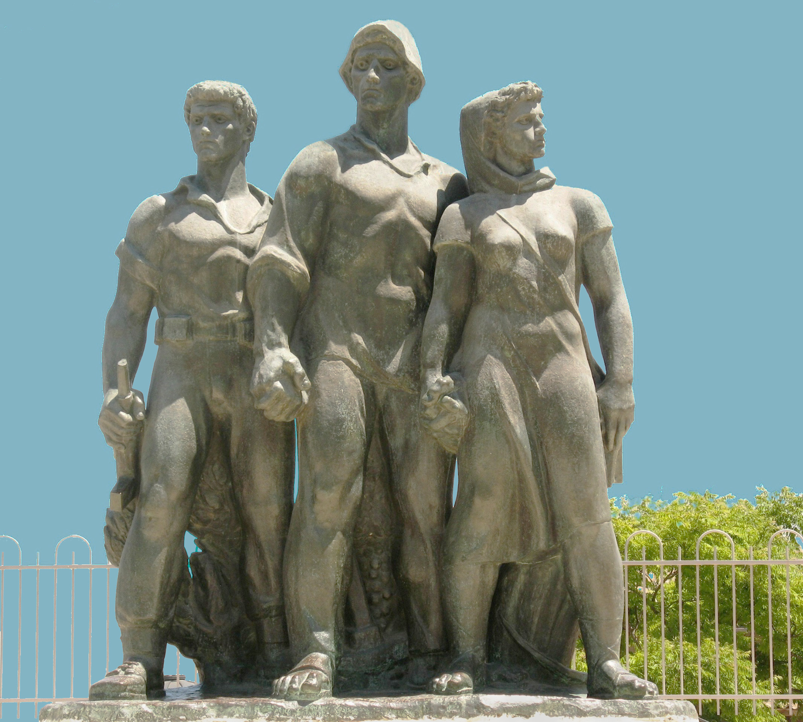
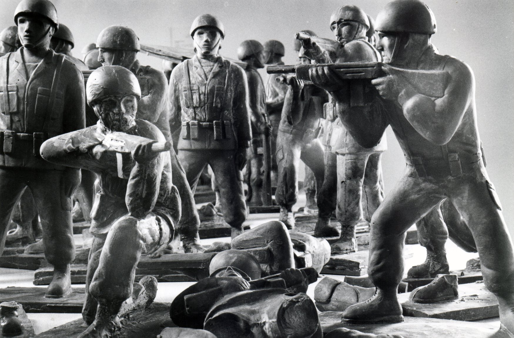

נתן רפפורט – אנדרטת המגינים (קיבוץ נגבה), 1953

מיכה לורי – אל תהיה חייל משוקולד, 1969

עדי נס – ללא כותרת, 1998
אנדרטת המגינים בנגבה היא יצירה מונומנטלית, המתנשאת לגובה של כארבעה וחצי מטרים ומשקלה כשישה טונות. האנדרטה מורכבת משלוש דמויות האוחזות ידיים: חלוצה הנושאת תיק עזרה ראשונה, חלוץ אוחז בטורייה, וחייל חגור בתחמושת ורובה בידו. הדמויות ניצבות על רקע אלמנטים של שיבולים, כרמים ועלי זית. הדמויות מאורגנות בקומפוזיציה פירמידלית: החלוץ הגבוה ניצב במרכז, משמאלו חלוצה ומימינו חייל. למרות האנכיות והסטטיות של הדמויות, הן פורצות מתוך המסה המרכזית ומחדירות מתח ודינמיות ליצירה. הקומפוזיציה מאוזנת, אף שאינה סימטרית לחלוטין. שלוש הדמויות מוצגות כשהן אוחזות ידיים, ויוצרות מעין חומה בצורה – ביטוי ויזואלי ישיר למושג "קיר אנושי" שהגן על הקיבוץ ועל המדינה כולה.
הדמויות והחייל מעוצבים בסגנון שרפפורט הגדיר כ"ריאליזם הרואי", המושפע ממסורת הפיסול המהפכני האירופי-סובייטי: דמויות ניצבות בגו זקוף ומביטות קדימה והרחק. סגנון זה, נועד להציג את פשוטי העם – הפועלים, האיכרים והחיילים – כגיבורים גדולים מהחיים, חסונים, נחושים וצופים אל עבר עתיד אוטופי. שלוש הדמויות באנדרטה בעלות מבנה גוף שרירי וחסון, המייצג את אידיאל "היהודי החדש". פיתוח הגוף מודגש באמצעות טכניקה המכונה באמנות הקלאסית "קפלי בד רטובים", המבליטה את האיברים המחוטבים. תווי הפנים המפוסלים מזכירים את הפיסול היווני הקלאסי, הן אינן מביעות כאב, שכול או תבוסה אלא מופנות אל האופק ואופייניות לכרזות ולפסלים הסובייטיים של התקופה.
רפפורט נוקט גישה פיגורטיבית, מונומנטלית וישירה שמעוררת הזדהות מיידית עם עוצמתם והקרבתם של המגינים. החייל מופיע כחלק ממשולש המייצג את האידיאל הציוני המשלב הגנה ועבודה: הוא חסון ופועל למען הכלל בנחישות. האנדרטה נועדה לייצר זיכרון משותף ולהעניק משמעות הרואית למחיר הדמים הכבד של המלחמה.
על שולחן עץ הונחו יציקות רבות של חיילים משוקולד בגובה 30 ס"מ. החיילים, החובשים קסדות ואוחזים בנשק, פוסלו בתנוחת התקפה, אף אחד מהם לא נראה פצוע. האמן, מיכה לורי, הזמין את הקהל לאכול מפסלוני השוקולד ולאחר שהמיצב עמד על כנו במשך תקופה מסוימת, נראו השולחנות כשדה קטל שנוצר על ידי הצופים. לורי ערב את המבקרים באקט אקטיבי והפכם, הלכה למעשה, לסוג של קניבלים, גרגרנים ומחוללי מלחמה.
השוקולד, כמדיום ומאכל מתוק עורר תשוקה והפעיל יצר עז, בנוסף, מרמז השוקולד על הערצת דימוי החייל הגברי, כפי שמשתקף בביטוי "חייל של שוקולד": חייל שנועד בעיקר ליצור רושם טוב, אך אינו בהכרח יעיל או נחוץ. הימצאותם של חיילים רבים כל כך מייצרת תחושה של מיליטריזם – קרי, ראיית הצבא כערך בפני עצמו ולא רק כצורך הגנתי בסיסי. מתוך כך, מתקבלת אצל הצופה התחושה ש"כל העם צבא".
שיתוף קהל ביצירה מייצר משמעות מושגית עמוקה המבטאת את תאוות המלחמה. כך נמתחת ביקורת – לאו דווקא על המלחמה כשלעצמה, אלא על הציבור שמשתף עמה פעולה, לוקח בה חלק ומסייע לקיים אותה. המיצב של לורי הציע ביקורת חריפה על האווירה המיליטריסטית ששררה בישראל בעקבות מלחמת ששת הימים. תחושת האופוריה שנוצרה בעקבות הניצחון המוחץ, הובילה לתפיסה שהצבא הישראלי חדל מלהיות גוף שנועד להגנה בסיסית בלבד.
במרכז תצלום בפורמט מרובע נראים חיילים במדים, מאורגנים במבנה פירמידלי. החיילים מתלכדים תחת חברם ומעלים אותו על נס. בראש הפירמידה, מטפס חייל על מוט, משמאלו ניצבים שלושה חיילים חגורים באפודים (אחד מהם אוחז ברובה), ומימינו שני חיילים תומכים מחזיקים ומביטים מעלה. בתמונה קו האופק המדברי נמוך, ומעליו מתנשאים הרים בגוון סגלגל. השמיים התכולים והבהירים תופסים את מרבית המרחב .הצילום מבוים, מתוכנן בקפידה רבה וכנראה נערך באולפן (סטודיו) או בשטח סטרילי ומבוקר.
צילום מבויים זה הוא חלק מסדרת "החיילים" של עדי נס, שבמקרה זה מתכתב ישירות עם תצלומים היסטוריים אייקוניים. היצירה של נס מאזכרת את "הנפת הדגל ב"איוו ג'ימה" ותצלום "דגל הדיו" שהונף על ידי חיילי חטיבת הנגב, לאחר כיבוש משטרת אוּם רַשְרַש (כיום אילת). בעוד שתצלום דגל הדיו סימל את הניצחון במלחמת העצמאות, חייליו של נס נראים כאילו משחקים בתפקיד שגדול מכפי מידותיהם. המוט שהם מניפים ריק לחלוטין – אין עליו דגל. בכך, האתוס הלאומי נותר מרוקן מתוכן ממשי, והפוקוס המרכזי של היצירה עובר אל הגוף הגברי, אל הממד האישי ואל מערכות היחסים ביניהם.
דמות החייל באמנות הישראלית, כפי שמצטיירת ביצירות הללו, מבטאת תפיסה של חייל המשתייך לקבוצה באופן אינהרנטי. באנדרטת המגינים מופיע חייל כסמל לחוסן ותקומה שלוב ידיים עם דמויות חלוציות. במיצב הפיסולי של מיכה לורי "אל תהיה חייל משוקולד" מופיע החייל כחלק מקבוצה אנונימית המוצעת למאכל ומוקרבת על מזבח המיליטריזם, ואילו החיילים של עדי נס מניפים דגל שאינו קיים ומטפסים על עמוד, מוצגים כקבוצה שמשתפת פעולה במצג שווא.
למרות המשותף לשלוש היצירות המעבר הכרונולוגי ביניהן משקף נאמנה את הטרנספורמציה שעברה החברה הישראלית לאורך השנים: האנדרטה של רפפורט משנות ה-50, משקפת חברה מגויסת הרואה בחייל את הסמל האולטימטיבי לכוח, הגנה, תקומה וחזון משותף: החייל מגן על הארץ לצד חלוצים שמקימים אותה. היצירה של מיכה לורי מסוף שנות ה-60 מציגה מבט חומל, חרד וביקורתי. החייל מתואר בראש ובראשונה כאדם שברירי, עשוי בשר ודם (או שוקולד), יצור מתכלה שהחברה מוכנה להקריב על מזבח האופוריה ותאוות המלחמה. לקראת סוף שנות ה-90 עדי נס מייצר דימוי של חברה מפקפקת ואינדיבידואליסטית. המבט על החייל מפרק מיתוסים קולקטיביים ומציב במקומם שאלות מורכבות של מגדר, הומו-ארוטיות, זהות אישית, בימוי והעמדת פנים.